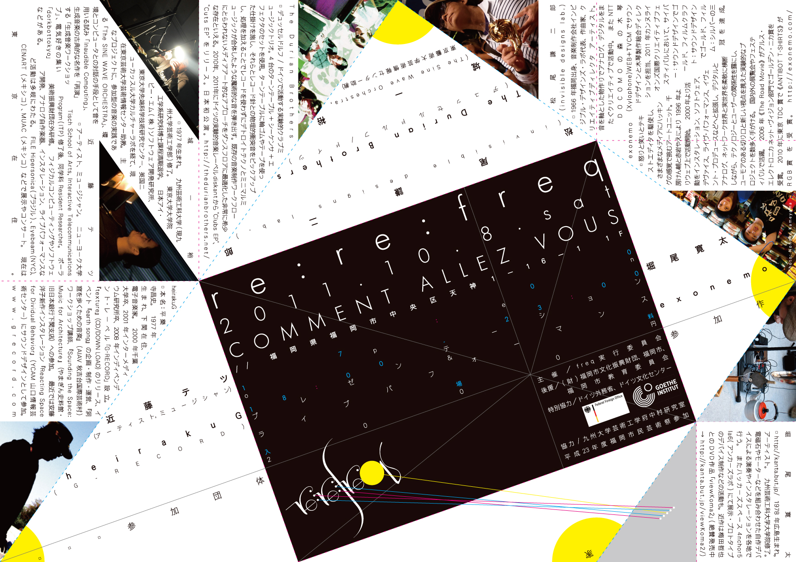
re:re:freq
日付 : 2011.10.8.sat
場所 : COMMENT ALLEZ VOUS, 天神/福岡
開場 : 17:00
開演 : 18:00-23:00
入場料 : 2000円(1ドリンク込)
freqは、音・映像・テクノロジーをテーマに、九州大学大学院芸術工学府中村研究室を中心に2001年より毎年開催され ているイベントです。近年は、processing、openFrameworksなどのプログラミング・プラットフォームを用いたグラフィ カルな要素を伴うサウンド・パフォーマンス、オリジナル電子デバイスを利用したインスタレーション、実験映像作品などを発表してきました。2009年のRe:freqはfreqの拡張版として企画され、学外のアーティストを招聘して開催、実験的な音楽やサウンドパフォーマンスが好評を博しました。 Re:Re:freqではfreqシリーズの活動をさらに拡張し、音 + 映像、+ メディア、+WEB、+ コミュニティなど、音に関わる 取り組みで世界的に活躍する作家を招き、その実験的な試みを発表・議論してゆきます。音をめぐる表現の未来をお楽しみください。
当日の会場内の安全性確保のため前売りチケットをお持ちでない方の入場をお断り、もしくは入場をしばらくお待ちいただく可能性があります。 （予約の連絡先はアーカイブ版では削除）
artist
topライブパフォーマンス
exonemo
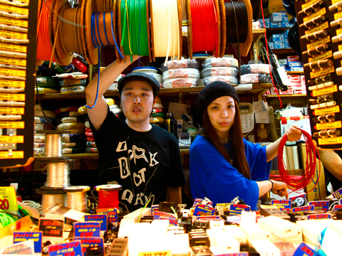
怒りと笑いとテキストエディタを駆使し、さまざまなメディアにハッキングの感覚で挑むアートユニット。千房けん輔と赤岩やえにより1996年よりウェブ上で活動開始。2000年より活動をインスタレーション、ソフトウェア、デヴァイス、ライヴ・パフォーマンス、イヴェント・プロデュースなどへと拡張し、デジタルとアナログネットワーク世界と実世界を柔軟に横断しながら、テクノロジーとユーザーの関係性を露にしユーモアのある切り口と新しい視点を携えた実験的なプロジェクトを数多く手がける。国内外の展覧会やフェスティバルで活躍。2006 年《The Road Movie》がアルス・エレクトロニカ ネット・ヴィジョン部門でゴールデン・ニカ賞を受賞。2010 年に東京 TDC 賞で《ANTIBOT T-SHIRTS》が RGB 賞を受賞。
web : http://exonemo.com/
プレゼンテーション
近藤テツ
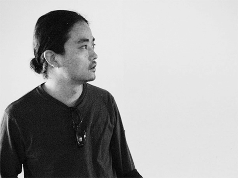
ニューヨーク大学Tisch School of Arts,Interactive Telecommunications Program(ITP)修了後、同学科Resident Researcher。ポーラ美術振興財団在外研修。フィジカルコンピューティングやソフトウェア開発、アナログ自作楽器、インスタレーション、ライブパフォーマンスなど活動は多岐にわたる。FILE Hipersonica(ブラジル)、 Eyebeam(NYC)、CENART(メキシコ)、 MUAC(メキシコ)などで展示やコンサート。現在は東京在住。
ライブパフォーマンス
城一裕
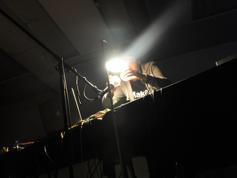
1977年生まれ。九州芸術工科大学 ( 現九州大学芸術工学部 ) 修了。東京大学大学院工学系研究科博士課程満期退学。日本アイ・ビー・エム (株) ソフトウェア開発研究所、東京大学先端科学技術研究センター、英国ニューカッスル大学カルチャーラボを経て、現在東京芸術大学芸術情報センター助教。主なプロジェクトに、参加型の音楽の実践である「The SINE WAVEORCHESTRA」、環境とコンピュータとの対話の手段として音を用いる試み「Inaudible Computing」、生成音楽の古典的な名作を「再演」する「生成音楽ワークショップ」、電気好きの集い「dorkbottokyo」などがある。
ライブパフォーマンス
The Durian Brothers
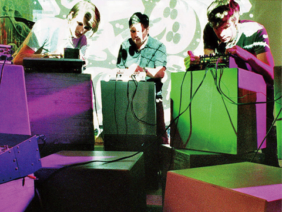
1997年より活動を開始。イレギュラーに改造した音響装置を使い、音楽と芸術に関わる実験的なコンセプトから革命的なクラブサウンドを目指す。輪ゴムなどで改造されたターンテーブルから高密度なポリリズムが発生し、エネルギッシュに振動する音場が未開のジャングルへと誘う。
ライブパフォーマンス
heirakuG
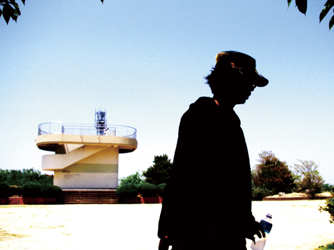
本名：平樂寺昌史。1977年生まれ、下関在住。電子音楽家。2000年千葉大学卒。2001年インターメディウム研究所卒。2008年インディペンデント・レーベル「G-RECORD」設立。その後の活動として、『texture』(CD/DOWN LOAD)のリリース、イベント『earth song』の企画・制作・運営、『洞窟を歩くための音楽』（AIAV秋吉台国際芸術村）ワークショップ講師、『Sounding the Space: Music for Architecture 』（やまぎん史料館・旧日本銀行下関支店）への参加。最近では安藤洋子新作インスタレーション『Reacting Space for Dividual Behavior』（YCAM山口情報芸術センター）にサウンドデザインとして参加。
ライブパフォーマンス
堀尾寛太
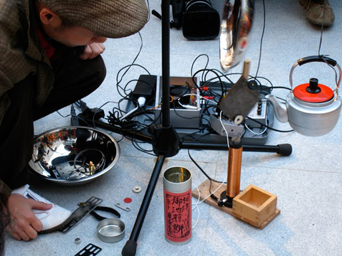
1978年広島生まれ。アーティスト。九州芸術工科大学大学院修了。電磁石やモーターなどを組み合わせた自作デバイスによる演奏やインスタレーションを各地で行う。またハッカーズスペース4nchor5 la6(アンカーズラボ)にて展示・プロトタイプのデバイス制作などの活動も。近作は梅田哲也とのDVD作品「viewKoma2」（絶賛発売中→http://kanta.but.jp/viewKoma2/ ）
web : http://kanta.but.jp/
プレゼンテーション
松尾謙二郎(invisible designs lab.)
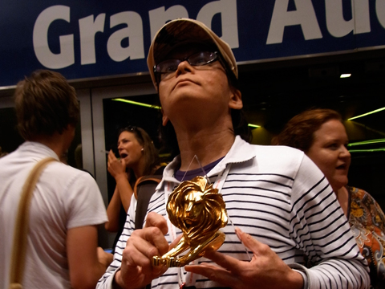
1966年福岡出身、音楽制作会社インビジブル・デザインズ・ラボ代表、作曲家、クリエイティブディレクタ アーティスト。
音を軸とした物作りでアナログ、デジタルをまたぐクリエイティブで活動中。またNTT DOCOMOの森の木琴(Xylophone)WEB+TVCMでサウンドデザインと木琴製作総合ディレクションを担当、2011年カンヌライオンズ国際クリエイティブフェスティバルにおいて、サイバー：サウンドデザインでゴールド、フィルムクラフト：サウンドデザインでゴールド、フィルム：シルバーの三冠を達成。
ダンスパフォーマンス
Lighting Choreographer
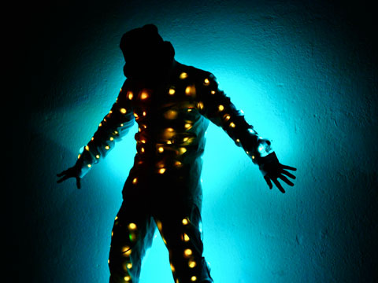
アーティスト：藤本実。神戸大学大学院塚本研究室所属。研究者としてダンスなどのパフォーマンスとテクノロジーを組み合わせた作品を発表。自らがパフォーマーであるという特徴を活かし、ライブパフォーマンスにおいて新しい表現を可能とするシステムを開発している。2010年にはArs Electronica招待展示、ADAA(Asia Digital Art Award)大賞・学生CGコンテストエンターテインメント賞を受賞、IPAよりスーパークリエータとして認定される。2011年にはパフォーマンスグループ「白A」の新作のシステム開発を行い、エディンバラ・フェスティバル・フリンジに1ヶ月間参加。
映像
早川貴泰
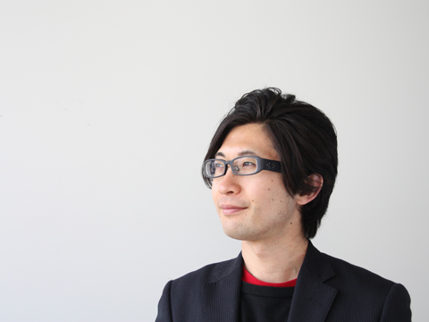
アーティスト/映像ディレクター
1979年山形県天童市生まれ。IAMAS修士課程修了。手描きアニメーションとデジタル技術を組み合わせた独自の方法論を用いて有機的な動きの映像作品を制作するとともに、高精細環境でのアニメーション表現の可能性を探求している。個展「Asian Animism and Animation」(Bangkok/Thailand/主催：国際交流基金)をはじめ、国内外での展示・上映、受賞、コラボレーション、講演、ワークショップなど多数。九州大学大学院 芸術工学研究院学術研究員などを経て、現在、JAPAN INSTITUTE（一般社団法人日本文化芸術機構）現代メディアコンテンツ研究特任委員会 特任研究員・委員、及び、昭和音楽大学 非常勤講師。
グラフィックデザイン
宇佐美毅
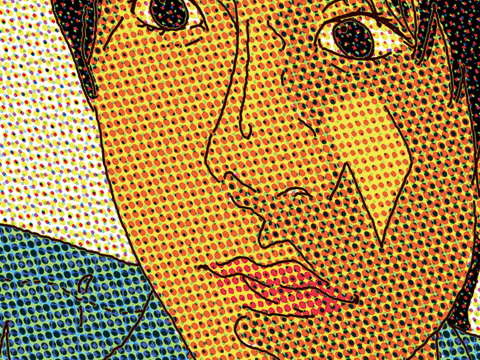
芸術工学博士、九州好青年科学館館長、アニメーション作家、イラストレーター、グラフィックデザイナー。切り絵、粘土、砂、ホットガンなどを使ったコマ撮りアニメーション手法を使用した実験的な短編アニメーションを制作している。また光や色、アニメーションに焦点を当てたインスタレーション作品を不定期に作成している。これまでにNHKデジタルスタジアム、ADAA(Asia Digital Art Award)、BACAJAなどを受賞。
web : http://croq2.blogspot.com/ http://youtube.com/user/usa3take4
オンラインメディア
FFFTV
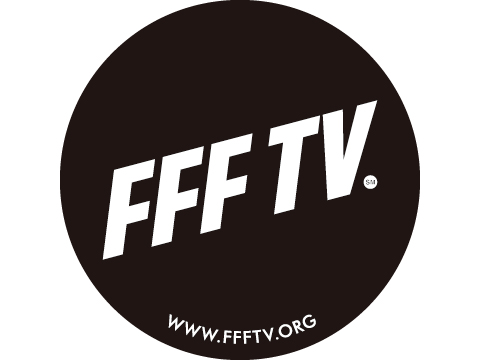
九州から世界へ。九州地域の音楽、ファッション、文化、ライフスタイル情報を発信するオンラインメディア Fast Find Future Television 「FFFTV」
当日は、re:re:frec のイベント模様を中心とした放送をUstream にて生配信！
詳しい内容はこちら▷ http://ffftv.hippy.jp/ffftv/
access
topCOMMENT ALLEZ VOUS
コマンタレヴー
福岡市中央区天神1-16-1 西鉄イン1F
地下鉄空港線 中洲川端駅『中洲口2番出口』より徒歩約3分
地下鉄空港線 天神駅『東口12番出口』より徒歩約3分
博多バスターミナルより 西鉄バスで約10分
西鉄100円バス乗車 『市役所北口』より徒歩約1分
contact
topお問い合わせ/チケット予約
当日の会場内の安全性確保のため前売りチケットをお持ちでない方の入場をお断り、もしくは入場をしばらくお待ちいただく可能性があります。 （予約の連絡先はアーカイブ版では削除）